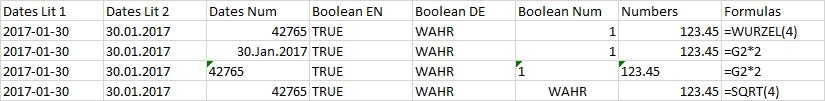
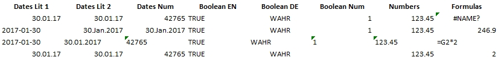
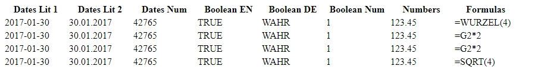

Introduction
The formatting attributes are always tuples which consist of generic attribue names and generic attribute values which are described in the table below:
| Generic Attribute Name | Generic Attribute Value | Scope | Descriptions | Restrictions, Portability |
|---|---|---|---|---|
| text color | color specification | table, row, column, cell | Sets text color | Excel and browsers may group slightly different colors together |
| fill color | color specification | " | Sets background color of the table fields | |
| top border bottom border left border right border | border specificaction1 | " | Applies cell borders | HTML: 'hairline' thickness is same as 'thin' thickness |
| underscore boldface italic | Boolean: true / false | " | Applies text formatting | |
| wrap text | Boolean: true / false | " | Text inside the cell will wrap to next row if too long | |
| comment | Literal: text contents | cell | Adds comments which are visible in Excel when holding the mouse cursor above the red triangle symbol | See 2 |
| font name | Literal: font name | table, row, column, cell | Sets the font name | The font name must be known to Excel or the web browser |
| font size | Numeral: size in points | " | Sets the font size | |
| number format | Literal: Excel number format | " | Applies Excel number format | See 3. It differs from B4P formatting. Web browsers do not support this. Output the values as text if they should contain formatting. |
| type | Literal: default, literal, numeral, boolean | " | default: No special rules literal: All contents are treated as literals, incl. numbers numeral: Contents are treated as numerals boolean: Contents are treated as booleans, e.g. 0 and 1 are TRUE and FALSE in Excel. | Attention: Forcing text as numerals or booleans may result to unsuccessful file loading by Excel. |
| horizontal align | Literal: automatic, left, middle, right | " | Alignment of cell contents | |
| vertical align | Literal: automatic, top, center, bottom | " | Alignment of cell contents | |
| column width | Numeral: width (1..255) | column | Sets column width using Excel units | |
| row height | Numeral: height (1..255) | row | Sets row height using Excel units | Not 100% accurate if using HTML format (Difference by +/- 1 is possible) |
| autofilter | Numeral: row number | table | Use 0 for header row. No pre-filtering made | |
| freeze rows | Numeral: row count | table | Number of top row frozen and always visible when scrolling | Used by Excel |
| freeze columns | Numeral: column count | table | Number of left columns frozen and always visible when scrolling | Used by Excel |
| hidden | Boolean: true, false | row, column | Hides a specifci row or column | In HTML, column width 0 is used |
| hidden row | Boolean: true, false | row | Like above, appliable to rows only | |
| hidden column | Boolean: true, false | column | Like above, appliable to columns only | In HTML, column width 0 is used |
1Parameter set with two values: thickness (literal) and color specification, e.g. { thin, red }. Valid thicknesses: hairline, thin, medium, thick
2Comments in HTML files loaded with Excel will work on the 1st table only in case multiple table are saved.
3See: Info about Excel number format codes
The following table summarizes some of the identified differences between HTML and Excel results:
| Category, Attributes | Excel | HTML |
|---|---|---|
| Default character set | Arial 10 pt | Calibri 11 pt (may differ among browsers) |
| Spreadsheet grid visible | Yes. To make invisible: table style table ( table name, sheet, fill color, white ); | No. Need to specify border color. |
| Unspecified column width | Standard 10.71 pt (may differ if Excel start-up configuration is different) | Width varies to fit contents. |
| Specified column widths | Fully supported | Fully supported when opening with Excel. Browsers will maintain at least minimum column width to fit the contents. |
| Dates | No autoamtic date recognition. You need to put numbers into the fields (e.g. with function abs ( date value ) and then apply a number format with values like "DD.MM.YYYY". | Excel recognizes dates in an intelligent manner. Dates in local format or specified as YYYY-MM-DD are detected automatically and loaded as dates. |
| Horizontal align | Default: left | Default: left. Header row: middle |
| Vertical align | Default: bottom | Default: middle |
| Header row | Standard text | Bold text |
| Wrap text | Default: false | Default: true |
| Text colors | May be degraded (e.g. crimson shown in red) | Normally not, but some browers may act differently |
| Formulas | Not supported | Supported, but language specific. Formulate as you work in Excel. All formulas must begin with an equal sign. Function names must be specified in the local language configured for Excel. If it's German, use a function name like "SUMME" instead of "SUM". |
| Output boolean values | Not supported | Supported, but language specific, and not case sensitive. Use "WAHR" and "FALSCH" if Excel is configured in German. |
| Forcing data to literal format, including numbers | Use attribute name 'type' and value 'text'. e.g. table style table( test, sheet, type, literal); | The same rule applies |
Different interpretation of numeric, date and boolean values
include( Style Library );
echo("Test various date, numeric and boolean representations");
table initialize( t,
{ { Dates Lit 1,Dates Lit 2,Dates Num,Boolean EN,Boolean DE,Boolean Num,Numbers,Formulas },
{ "2017-01-30","30.01.2017",abs(date("2017-01-30")),TRUE,WAHR,1,123.45,"=WURZEL(4)" },
{ "2017-01-30","30.01.2017",abs(date("2017-01-30")),TRUE,WAHR,1,123.45,"=G2*2" },
{ "2017-01-30","30.01.2017",abs(date("2017-01-30")),TRUE,WAHR,1,123.45,"=G2*2" },
{ "2017-01-30","30.01.2017",abs(date("2017-01-30")),TRUE,WAHR,1,123.45,"=SQRT(4)" } } ) ;
table style columns( t, {0..7}, table, column width, 14 );
table style cells ( t, Dates Num, 2, single, number format, "DD.MMM.YYYY" );
table style cells ( t, Dates Lit 1, 2, single, number format, "DD.MMM.YYYY" );
table style cells ( t, Dates Lit 2, 2, single, number format, "DD.MMM.YYYY" );
table style rows ( t, 3, sheet, type, literal );
table style cells ( t, Boolean Num, 4, single, type, boolean );
translate style attributes for html(t);
table save( t, "Images/Style_Number_Formats.html", HTML );
translate style attributes for excel(t);
table save( t, "Images/Style_Number_Formats.xls", EXCEL );
echo("Done.");Test various date, numeric and boolean representations
Done.
Test Click on the file name view the result: Style_Number_Formats.html.
Test Click on the file name open the file with Excel: Style_Number_Formats.xls (Excel XML 2003 format - confirm the message box query).
The Excel file looks like this one:

The HTML file loaded in Excel looks as follows:

The HTML file loaded in Excel looks as follows:
